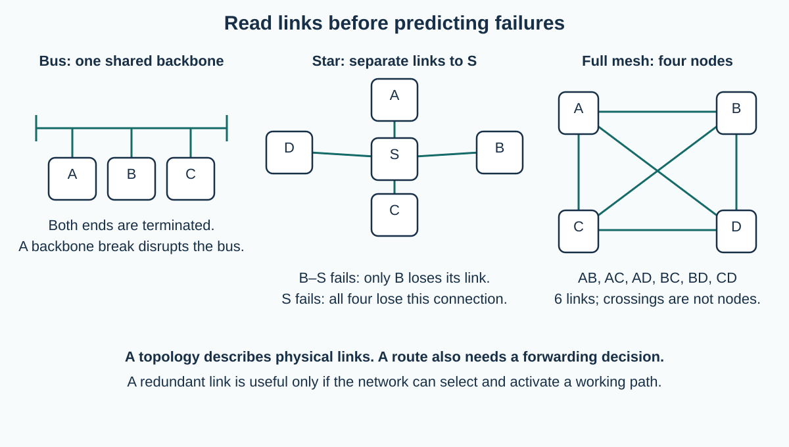

The topology is the link pattern
Visual overview
Bus, star and full mesh

Visual transcript
- Bus uses a shared backbone with termination at both ends.
- Star hosts have independent links to the centre.
- Full mesh has AB, AC, AD, BC, BD and CD; line crossings are not nodes.
Establish the concept
A bus connects devices to one shared backbone. A signal travels along the common medium and attached devices inspect it.
A star gives each end device a separate link to one central switch. A frame travels from the source to the switch and then from the switch to the destination link.
A mesh provides multiple interconnections. A full mesh connects every node pair directly; partial meshes retain several, but not all, possible links. Alternative connected routes may remain after one link fails.
A hybrid combines two or more topology patterns. In the example, end devices form stars around S1 and S2, while S1, S2 and S3 form a mesh. A frame is a unit of LAN data; switches forward it on selected links. Assume a loop-free forwarding path, with a spare path available after a failure.
Enough packet and frame vocabulary to follow a path
Data is sent in structured units rather than as an entire file moving as one indivisible object. At this level, an IP packet contains addressing information and data for delivery between networks. On an Ethernet link, a frame carries data with link-level addressing such as source and destination MAC addresses. Lesson 011 uses these addresses to distinguish local forwarding from routing.
Connect each structure to how a transmission travels
| Topology | Normal delivery | Failure and cost consequence |
|---|---|---|
| Bus | Attached devices share one backbone; signals travel along it. The addressed receiver accepts the relevant frame. | Few backbone cables, but shared traffic contends for access. A backbone break or faulty termination can disrupt the shared segment. |
| Star | A host sends to the central device. With a switch and a known destination port, the switch forwards through that port. | Each host needs its own cable. A host-link failure isolates that host; centre failure removes the connection through that centre. |
| Full mesh | Every pair of nodes has a direct link; forwarding can also use an available multi-link route. | Many links provide alternatives at greater cabling, interface and management cost. |
| Partial mesh / hybrid | A partial mesh supplies some alternate links. A hybrid combines layouts, such as local stars joined by meshed links. | Check the actual graph: a “mesh” label does not prove that every node survives every failure. |
Explain termination and count links
A bus terminator absorbs signals reaching an end of the cable and reduces reflections that would interfere with the signal. It does not choose destinations. In a four-node full mesh, list AB, AC, AD, BC, BD and CD: six links. Counting three neighbours at each of four nodes gives twelve ends, so divide by two: 4 × 3 / 2 = 6. In general, N distinct nodes need N(N − 1)/2 undirected pairwise links.
Core explanation · Exam essentials
- Topology is the link pattern; explain the actual path and relevant failure point.
- A full mesh connects every pair; a partial mesh does not. Four full-mesh nodes need six links.
Optional extension: numbered packet reassembly
A message may be split into numbered packets. In a simplified reassembly example, packets labelled 3, 1 and 2 arrive and are placed in positions 1, 2 and 3 before their payloads are combined. This illustrates why numbering can help when arrival order differs; transport-protocol reliability and retransmission rules are beyond this AS topology lesson.